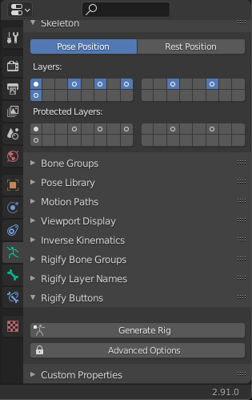
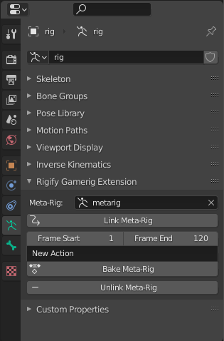

Usage
The add-on is supposed to extend rigify with a simple goal: Mirrow the animations of the generated rig back to the metarig for easier export to game-engines.
Generate a Rigify Rig
At first generate a Rigify rig. To do so, press Shift-A in object mode. Then select for example Armature > Human (Meta-Rig) (it should work with any Rigify rig). Once that is done, make sure to generate the rig.
To do so select the armature, then navigate to Object Data Properties > Rigify Buttons > Generate Rig.
{kind=link}
Link the Meta-Rig to the Generated Rig
Once the rig has been generated, select it, then navigate to Object Data Properties > Rigify Gamerig Extension. Then select the metarig of the generated rig in the dropdown menu.
{kind=link}
- Link Meta-Rig
Once linked, the generated rig can be used as control rig while the meta-rig will function as deform rig.
- Frame Start
Set the frame start for baking actions.
- Frame End
Set the frame end for baking actions.
- Input Field
Set a name for the action.
- Bake Meta-Rig
Bake current visual animation of the control rig to the meta-rig as action and directly stash it as nla-strip.
- Unlink Meta-Rig
Unlinks the metarig from the control rig.